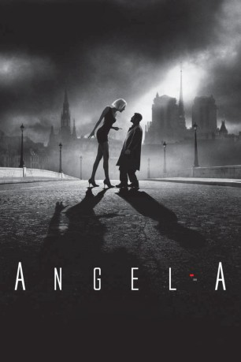

#385 Angel-A
 
 IMDB-Wertung: 7.1 / 10
IMDB-Wertung: 7.1 / 10  Metascore: 48
Metascore: 48 
Weichei André steht ohne Aussicht auf Rettung bei so ziemlich jedem Schläger von Paris in der Kreide. Deshalb zieht er nun den Freitod durch einen Sprung von der Seine-Brücke in Erwägung. Da sieht er neben sich die attraktive, allzu junge und auch kaum sonderlich bekleidete Angela dasselbe tun und fischt sie aus dem Fluss. Die unbekannte Schöne aber war schon vorher mit allen Wassern gewaschen und zeigt sich aufrichtig dankbar ...
Jahr: 2005
Dauer: 91 Minuten
FSK: 12
Land: Frankreich Studio: TOBIS FilmTonspuren:
Untertitel:
Auflösung: 1080p (1920x816) Größe: 3389 MB
Genre: Komödie, Drama, Fantasy, Liebe
Regisseur:  Luc Besson
Luc Besson
Drehbuch: Luc Besson
Soundtrack: Anja Garbarek
Darsteller:
 Jamel Debbouze als André Moussah
Jamel Debbouze als André Moussah- Rie Rasmussen als Angel-A
 Gilbert Melki als Franck
Gilbert Melki als Franck- Serge Riaboukine als Pedro
- Akim Chir als Le chef des malfrats
- Eric Balliet als Garde du corps Franck
- Loïc Pora als Le malfrat #2
- Venus Boone als La mère d'Angela
- Jérôme Guesdon als Le malfrat #3
- Michel Bellot als Le planton US
- Michel Chesneau als Le flic commissariat
- Olivier Claverie als Le sécrétaire US
- Solange Milhaud als La femme de Saint-Lazare
- Laurent Jumeaucourt als Le dragueur
- Franck-Olivier Bonnet als Le dernier client
- Akim Colour als Le chef des malfrats
- Tonio Descanvelle als Client Angela 2
- Grigori Manoukov als Le serveur roumain
- Alain Zef als Le sommelier
- Jean-Marc Montalto als Le réceptionniste
- Jil Milan als Client Angela 1
- Todd Thaler als Le père d'Angela
- Gael Triam als Client Angela 3
Datei: X:\2005(A-F)\Angel-A (2005, FSK12, 1920x816).mkv seit 20.02.2015
Festplatte: HD 2003-2004-2005(A-F)
 Es gibt insgesamt 49 Filme in der Gruppe '2005(A-F)'
Es gibt insgesamt 49 Filme in der Gruppe '2005(A-F)'